CO3133 · Deep Learning and Its Applications · Semester 261
We classify short English texts from dair-ai/emotion into six emotions and compare a TF-IDF + Logistic Regression baseline with two fine-tuned transformers, DistilBERT and BERT, and with a frozen-encoder DistilBERT (main controlled experiment). Every choice was made on validation; the test set was used once. On test, the selected model (DistilBERT full fine-tune, seed 42) reaches Macro-F1 0.8902 and accuracy 0.9270 (three seeds: 0.8861 ± 0.0038) against 0.8548 for the best baseline. BERT ties with DistilBERT (0.8878 ± 0.0004) at about twice the cost, and a frozen encoder fails (0.4210 ± 0.0020).
Single-label multiclass classification: given one short English text, predict one of six emotions (sadness, joy, love, anger, fear, surprise). The prediction unit is one text. Recognising emotion in short, informal writing is a common building block for feedback analysis, support triage and social-media monitoring. The main difficulties are strong class imbalance (joy 33.5% vs surprise 3.5% of train), very short texts (median 17 words), emotions that overlap in wording (joy and love), and machine-generated labels with some conflicting duplicates.
We use the six-class split configuration of
dair-ai/emotion
(Saravia et al., EMNLP 2018), pinned to Hugging Face revision cab853a: 20,000 short English
texts with one label each (sadness, joy, love, anger, fear, surprise). The dataset card marks the labels as
machine-generated and restricts use to education and research. No split has missing, blank or non-string
texts or invalid labels. This section shows only the findings that changed a modelling decision.
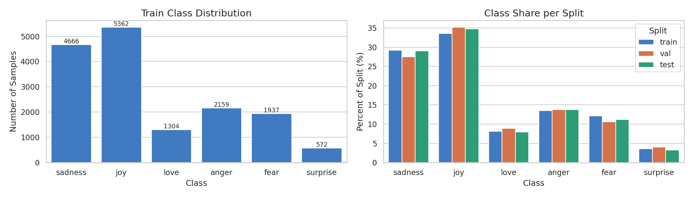
Most texts follow "i feel(ing) <emotion word> …". The joy sample is negated yet labelled joy.
| Finding | Evidence (train unless stated) | Decision |
|---|---|---|
| Imbalanced classes | joy 33.5%, surprise 3.5%; ratio 9.47 | Select models by validation Macro-F1, not accuracy. Class weights were tested on the baseline (validation only): balanced weights raised Macro-F1 from 0.7527 to 0.8489 and surprise recall from 0.40 to 0.81, so they are used for every model |
| Same text in two splits (leakage) | 19 texts appear in two splits: 11 in train and test, 3 in val and test, 5 in train and val. A model trained on such a text would be scored on a sentence it has already seen, which inflates val/test scores | Rules 1–2: keep the test copy and remove the train/val copy; for train–val pairs keep the val copy (section 03) |
| Same text, different labels | 51 of the 52 repeated texts carry two different labels, e.g. "i am feeling stressed and more than a bit anxious" is sadness in train but anger in test | Rules 3–4: remove such groups from train/val (no label is guessed); test keeps its released labels, noted as a limitation |
| Short texts | DistilBERT tokens: P95 45, max 87 (incl. [CLS]/[SEP]) | MAX_LEN = 128: no text is truncated |
| No length shortcut | Median words per class 16–19 | Length is not a cue for the label; no length feature or length-based sampling |
| Labels look keyword-driven | Most class-specific n-grams are emotion adjectives found in a single class (e.g. "feel offended" in anger only) | Expect a strong lexical baseline; negated texts are checked as an error group (hypothesis, not a result) |
| Small vocabulary gap | Words unseen in train: 2.72% of val tokens, 2.74% of test tokens | A TF-IDF vocabulary fit on train only covers val/test well |
Both models get the minimal text: Unicode NFC, lowercase, trimmed, repeated spaces collapsed. Nothing else is removed, because DistilBERT uses punctuation and function words, and negations such as not flip an emotion. The aggressive variant is used only by the baseline stopword experiment.
Both models (main runs). Train vocabulary 15,188 words, 19.18 words per text.
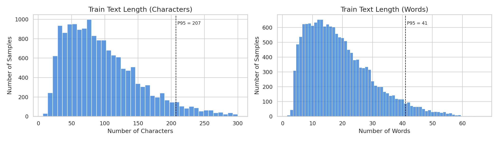
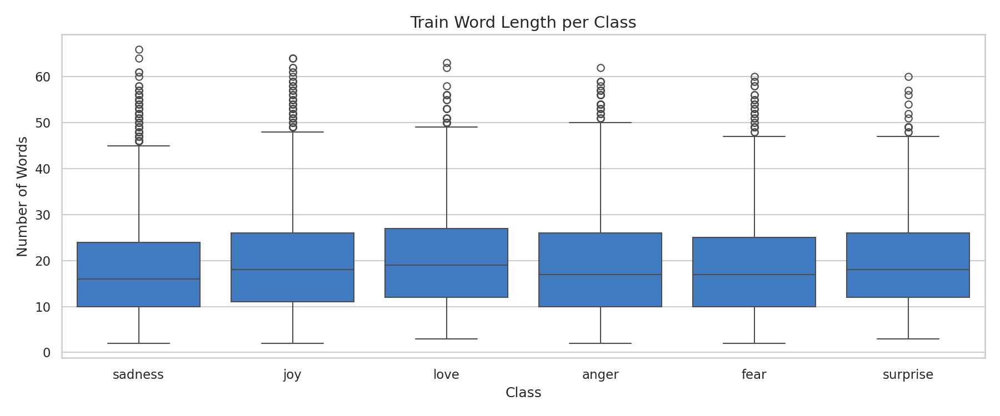
Baseline stopword experiment only. Keeps letters and digits, removes 295 scikit-learn stopwords but keeps 23 negations and intensifiers (not, no, never, very, so, but…). 9.31 words per text, no empty text.
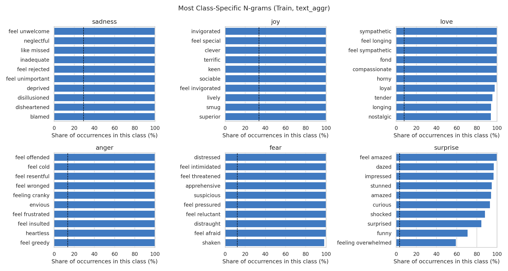
| Split | Median | P95 | P99 | Max | Texts longer than MAX_LEN = 128 |
|---|---|---|---|---|---|
| train | 20 | 45 | 57 | 87 | 0 (0%) |
| val | 20 | 44 | 56 | 69 | 0 (0%) |
| test | 20 | 45 | 55 | 66 | 0 (0%) |
DistilBERT reads WordPiece tokens, not words: it adds [CLS] and [SEP] and splits some words into pieces
(e.g. didnt → didn + ##t), so one word is about 1.06 tokens here.
The longest text has 87 tokens, so MAX_LEN = 128 keeps every text whole and nothing is truncated.
We keep the official train / validation / test splits and never change the test set. Two texts count as the same when their normalized keys match (NFC → lowercase → trim → collapse spaces). The four approved rules are applied in order; the first two prevent leakage, the last two clean labels. Test is used once, after model selection.
| Rule | Train removed | Val removed |
|---|---|---|
| 1. Text also in test → drop the train/val copy | 11 | 3 |
| 2. Text in both train and val → drop the train copy | 5 | – |
| 3. Same text with different labels → drop the whole group | 60 | 4 |
| 4. Same text, same label → keep the first row | 1 | 0 |
| Total | 77 | 7 |
| class | train | val | test |
|---|---|---|---|
| sadness | 4,661 (29.27) | 550 (27.60) | 581 (29.05) |
| joy | 5,340 (33.54) | 702 (35.22) | 695 (34.75) |
| love | 1,283 (8.06) | 176 (8.83) | 159 (7.95) |
| anger | 2,152 (13.52) | 274 (13.75) | 275 (13.75) |
| fear | 1,923 (12.08) | 211 (10.59) | 224 (11.20) |
| surprise | 564 (3.54) | 80 (4.01) | 66 (3.30) |
A lexical baseline shows how far word and bigram counts go on this data; the EDA (section 02) suggested labels
follow emotion keywords, so a strong baseline was expected. DistilBERT is the pretrained model from the
approved plan: it reads the whole text in context (word order, negation). BERT is the larger encoder it was
distilled from. All models use the same filtered splits. The transformers read the minimal text
(text_min: NFC, lowercase, whitespace); the selected baseline reads the aggressive text
(stopwords removed, negations kept), chosen on validation in experiment 3 (section 07).
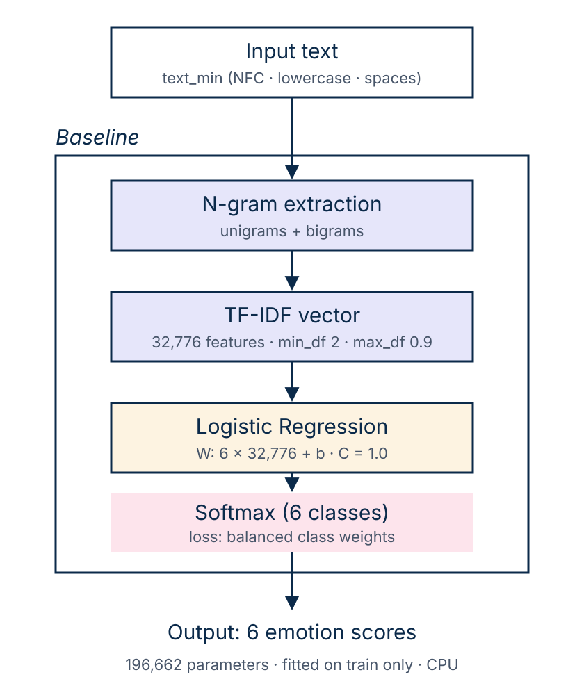
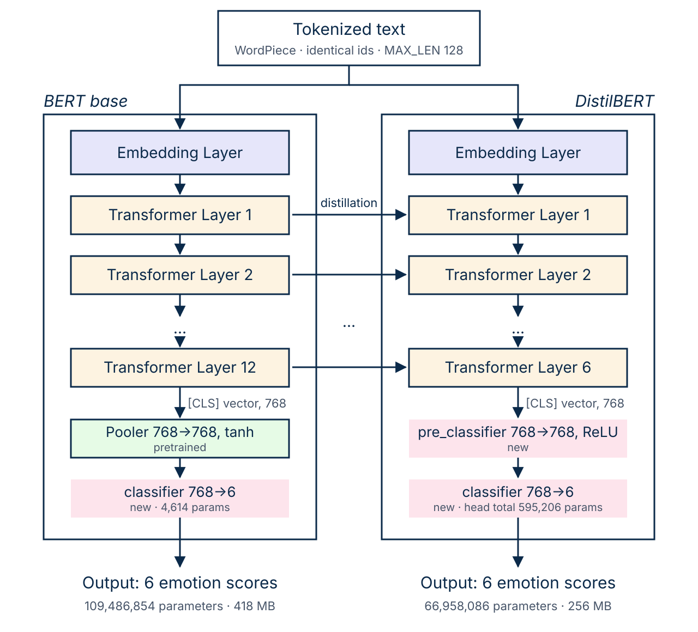
| TF-IDF + LR | DistilBERT | BERT | |
|---|---|---|---|
| Input | Sparse TF-IDF vector (uni + bigrams) of the minimal or aggressive text | WordPiece tokens, MAX_LEN 128 | Same WordPiece vocabulary and MAX_LEN as DistilBERT |
| Loss | Cross-entropy, balanced class weights | Weighted cross-entropy | Weighted cross-entropy |
| Parameters | 196,662 (minimal text) · 102,426 (aggressive text, selected) | 66,958,086 | 109,486,854 |
| Self-implemented | Filtering, features pipeline, class-weight test (scikit-learn models) | Data loader, training loop, weighted loss, two learning rates, checkpoint selection (Hugging Face pretrained weights) | |
| Libraries | scikit-learn | PyTorch, Hugging Face Transformers | PyTorch, Hugging Face Transformers |
| Hardware | Colab CPU, Intel Xeon @ 2.00GHz (2 vCPU) | Colab Tesla T4 (14.6 GB) | Colab Tesla T4 (14.6 GB) |
| Optimizer / learning rate | Transformers: AdamW, 2e-5 for the pretrained encoder and 1e-4 for the new head. Baseline: logistic regression (lbfgs), C = 1.0 |
|---|---|
| Loss | Cross-entropy with balanced class weights computed on train (surprise ×4.71, joy ×0.50) |
| Batch size / epochs | 16 / 3 (996 steps per epoch, 2,988 in total) |
| Scheduler / warmup | Linear warmup over the first 10% of steps (298), then linear decay to 0 |
| Regularization / early stopping | Weight decay 0.01, gradient clipping at 1.0, the models' default dropout; no early stopping, the best epoch is kept |
| Checkpoint criterion | Best validation Macro-F1 |
| Seed | 42 for every run; every transformer setup (DistilBERT full, BERT full, DistilBERT frozen) repeated with seeds 43 and 44 (mean ± std over three seeds) |
| Hardware / software | Colab Tesla T4 14.6 GB, Intel Xeon 2 vCPU, 12.7 GB RAM; Python 3.13.16, PyTorch 2.14.1+cu130 (CUDA 13.0), Transformers 5.22.1, scikit-learn 1.6.1 (final run, 8 Nov 2026) |
| Hyperparameter selection | Not tuned: standard BERT fine-tuning values, identical for both transformers. Class weights (Macro-F1 0.8489 on vs 0.7527 off) and the baseline text variant were chosen on validation |
Main run (seed 42) of each transformer. Training loss falls from 0.67 (DistilBERT) and 0.80 (BERT) in epoch 1, an average that includes the steps with a still-random head, to about 0.12 in epoch 3; validation loss falls from 0.24–0.25 to about 0.20. Validation Macro-F1 rises over the epochs; the saved epoch is 3 for DistilBERT and 2 for BERT (0.9200, then 0.9154 at epoch 3). Over all six transformer runs, validation loss rose again at epoch 3 in three runs (DistilBERT seeds 43 and 44, BERT seed 44) while Macro-F1 still improved, and the selected epoch is the last one in five of six runs. Three epochs therefore look close to the useful limit, with no strong overfitting; longer training was not tested. The frozen-encoder runs (orange) underfit: train and validation loss are equal (1.425 at epoch 3) and still falling when the learning rate reaches zero.
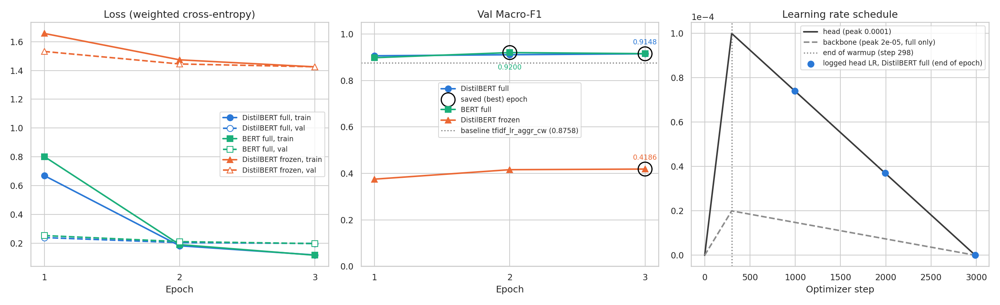
Final results. Every choice (class weights, text variant, checkpoint epoch, final model) was made on validation with rules fixed in advance; the 12 runs were then evaluated once on the 2,000 test texts. Switch between test and validation with the tabs, filter by model or setup and sort by any column. Green = best, light = second best in each column. Seeds 43 and 44 repeat a setup with a different seed only.
| Model | Text | Setup | Seed | Split | Macro-F1 (%) | Acc (%) | Train time (s) | Inference (ms/sample) | Params (M) | Trainable (M) | Size (MB) | Hardware |
|---|
Transformer vs baseline. On test, DistilBERT (seed 42) reaches Macro-F1 0.8902 and accuracy 0.9270 against 0.8548 and 0.8905 for the selected baseline (+0.0354 / +0.0365). It is better on all six classes, most on love (+0.060) and least on anger (+0.022). Text by text, 124 test texts are right only for DistilBERT and 51 only for the baseline (McNemar exact p ≈ 3 × 10−8). The gain is largest where one emotion word is not enough: long texts (≥ 35 words, accuracy 0.920 vs 0.806), texts with "but" (0.929 vs 0.854) and negated texts (0.912 vs 0.857); on short texts the two are close (0.943 vs 0.924). The price is about 45× the CPU latency per text (59.6 vs 1.32 ms), 650× the parameters and 219× the file size.
BERT vs DistilBERT. BERT reaches 0.8878 ± 0.0004 on test against 0.8861 ± 0.0038 (validation 0.9163 ± 0.0032 vs 0.9155 ± 0.0020). The per-seed differences change sign on both splits, and on test 62 texts are right only for BERT and 60 only for DistilBERT (McNemar p ≈ 0.93): the two models are tied. BERT costs 1.64× the parameters, 1.89× the training time and 2.00× the CPU latency, so DistilBERT is kept.
Validation → test. The strong models lose 0.01–0.03 Macro-F1 from validation to test, mostly on surprise (DistilBERT −0.082; only 66 test texts, so one error moves its F1 by about 0.015) and love (−0.033); sadness and fear barely change. Part of the drop is expected, because the checkpoint epoch and the model were chosen on validation. The ranking of all setups is the same on both splits.
| Model / setup | Runs | Validation | Test |
|---|---|---|---|
| DistilBERT, full fine-tune | 3 | 0.9155 ± 0.0020 | 0.8861 ± 0.0038 |
| BERT, full fine-tune | 3 | 0.9163 ± 0.0032 | 0.8878 ± 0.0004 |
| DistilBERT, frozen encoder | 3 | 0.4191 ± 0.0061 | 0.4210 ± 0.0020 |
| TF-IDF + LR, aggressive text, weights | 1 | 0.8758 | 0.8548 |
| TF-IDF + LR, minimal text, weights | 1 | 0.8489 | 0.8365 |
| TF-IDF + LR, minimal text, no weights | 1 | 0.7527 | 0.7289 |
| Majority class (always joy) | – | 0.0868 | 0.0860 |
| Class (test n) | Baseline | DistilBERT | BERT | DistilBERT val |
|---|---|---|---|---|
| sadness (581) | 0.9296 | 0.9612 | 0.9643 | 0.9616 |
| joy (695) | 0.9110 | 0.9504 | 0.9513 | 0.9561 |
| love (159) | 0.7925 | 0.8523 | 0.8452 | 0.8853 |
| anger (275) | 0.8917 | 0.9134 | 0.9202 | 0.9375 |
| fear (224) | 0.8631 | 0.8904 | 0.8825 | 0.8929 |
| surprise (66) | 0.7407 | 0.7737 | 0.7654 | 0.8554 |
| Macro-F1 | 0.8548 | 0.8902 | 0.8881 | 0.9148 |
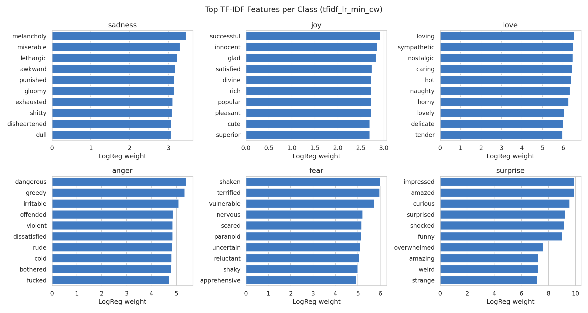
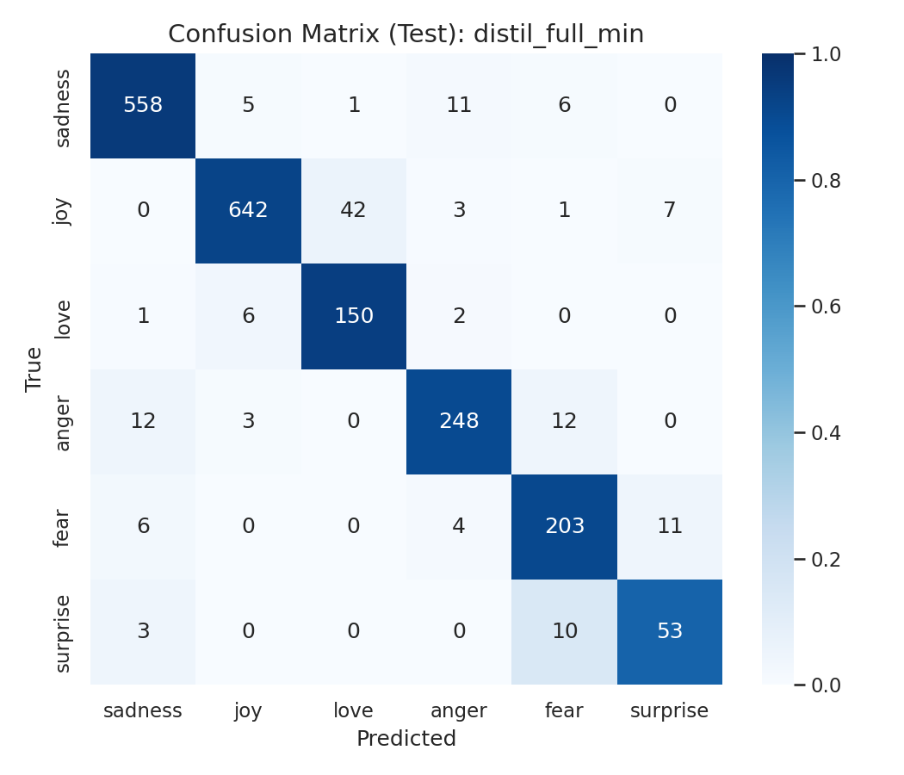
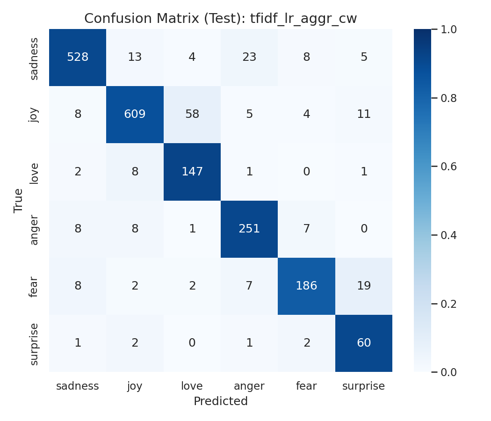
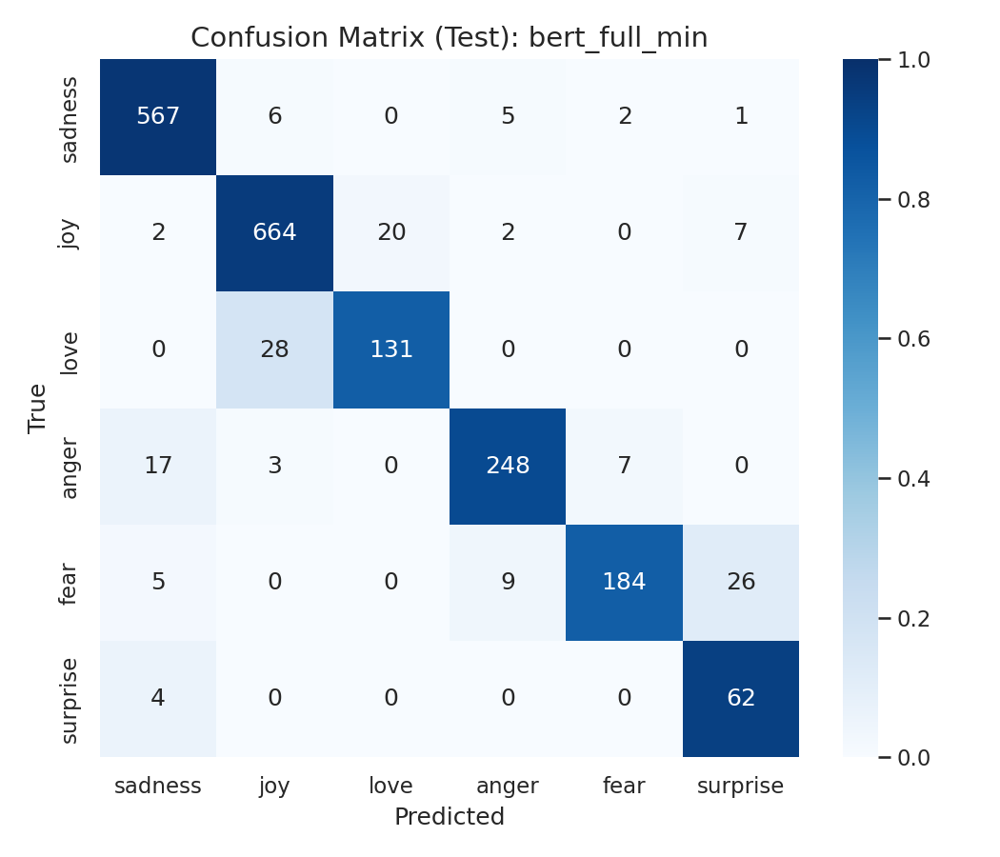
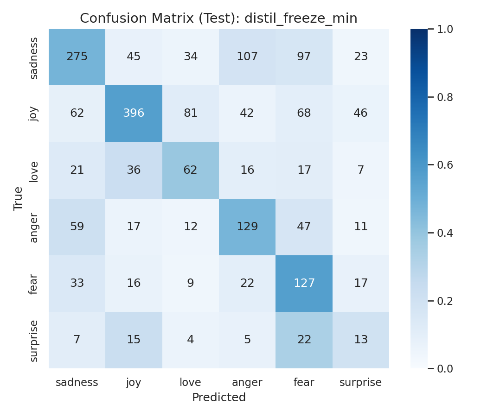
Colour = share of the true class (the diagonal is recall); numbers = counts out of 2,000 test texts. The errors are read in section 08.
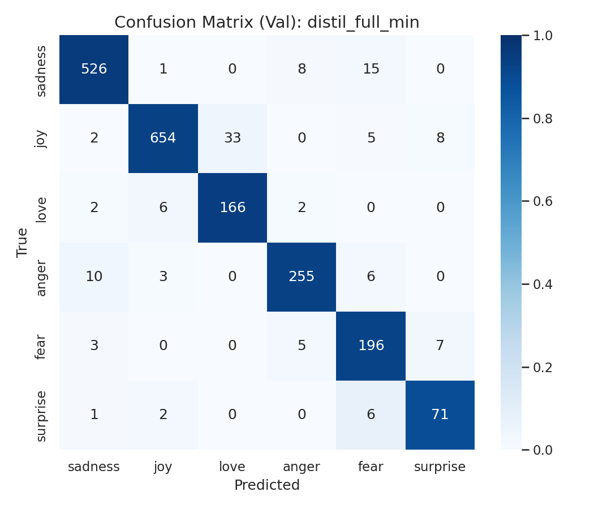
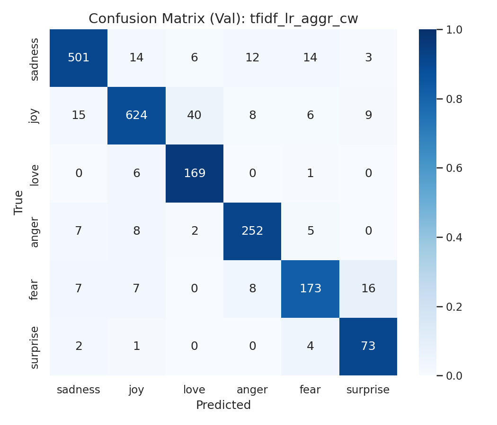
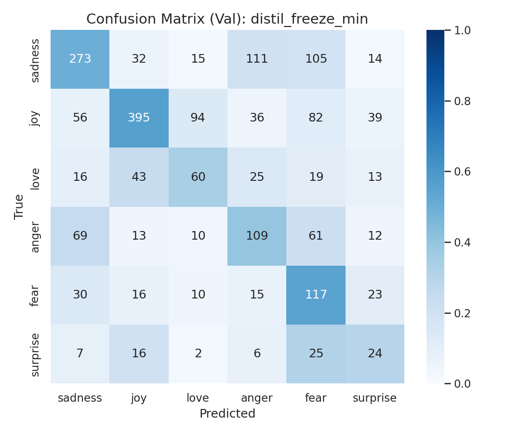
Same layout on the 1,993 validation texts, the split used for every choice. Numbers after each name = validation Macro-F1.
Inference was timed with one warm-up and five repeats, keeping the median. "Batched" times the whole validation set (baseline on CPU, transformers on the T4 in batches of 16, tokenisation included). "One text" times 100 validation texts one at a time; the CPU column is the only like-for-like comparison of all models (same CPU, one PyTorch thread). Train time is the mean ± std over seeds.
| Model | Trainable params | Size (MB) | Train time (s) | Batched (ms/text) | One text, CPU (ms) | One text, GPU (ms) | Test Macro-F1 (mean) |
|---|---|---|---|---|---|---|---|
| TF-IDF + LR, aggressive text | 102,426 | 1.17 | 5.3 (CPU) | 0.0148 (CPU) | 1.32 | – | 0.8548 |
| DistilBERT, full fine-tune | 66,958,086 | 256.12 | 276.9 ± 10.5 | 1.63 (T4) | 59.64 | 5.92 | 0.8861 |
| DistilBERT, frozen encoder | 595,206 | 256.12 | 81.4 ± 0.4 | 1.59 (T4) | 60.90 | 4.71 | 0.4210 |
| BERT, full fine-tune | 109,486,854 | 418.36 | 524.7 ± 0.5 | 3.16 (T4) | 119.19 | 8.79 | 0.8878 |
BERT / DistilBERT: 1.64× the parameters, 1.89× the training time, 2.00× the CPU latency for +0.0016 test Macro-F1, inside the seed spread. The baseline is about 45× faster than DistilBERT on the same CPU and 219× smaller, for −0.031 mean test Macro-F1. Freezing the encoder saves training time (×0.29) but not inference time, since the forward pass is the same. GPU memory was not measured, because several models shared the GPU during the run.
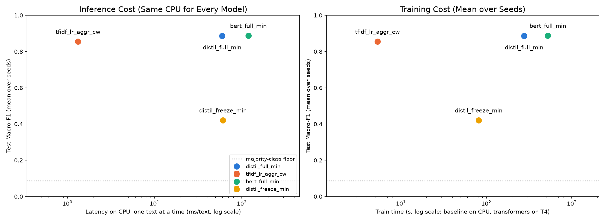
Four comparisons, each changing one factor. Every decision was made on validation with a rule written down before the runs; the test set only checks whether the conclusion holds. Transformer comparisons use the mean over seeds 42/43/44 against the seed-to-seed spread, never one run.
| Experiment (A − B) | Val mean | Val: A higher | Test mean | Test: A higher | Decision |
|---|---|---|---|---|---|
| 1 (main). Full − frozen encoder (DistilBERT) | +0.4965 | 3 of 3 | +0.4651 | 3 of 3 | Full fine-tune; frozen excluded |
| 2. BERT − DistilBERT (full) | +0.0008 | 2 of 3 | +0.0016 | 2 of 3 | Tie → smaller model (DistilBERT) |
| 3. Stopwords removed − kept (baseline) | +0.0269 | 1 of 1 | +0.0183 | 1 of 1 | Aggressive text for the baseline |
| 4. Class weights on − off (baseline) | +0.0961 | 1 of 1 | +0.1076 | 1 of 1 | Weights on for every model |
| 3. Stopwords removed vs kept | 4. Class weights on vs off (ablation) | |
|---|---|---|
| Hypothesis | The signal sits in emotion adjectives, which both texts keep, so Macro-F1 changes little | Balanced weights raise recall of the small classes at some cost in precision, so Macro-F1 rises more than accuracy |
| Changed / fixed | Text column (minimal → aggressive); TF-IDF settings, C, class weights fixed | class_weight off → balanced; minimal text, TF-IDF settings, C = 1 fixed |
| Rule | Higher val Macro-F1 wins; a tie keeps the minimal text | Higher val Macro-F1 wins; a tie keeps no weights |
| Result | 0.8758 vs 0.8489 val (+0.0269), 0.8548 vs 0.8365 test; F1 higher on all six classes with half the n-grams (17,070 vs 32,776); 85 texts right only with aggressive text vs 37 (McNemar p ≈ 2 × 10−5). Hypothesis rejected: removing function words puts the negation next to the emotion word (accuracy on negated val texts 0.8462 → 0.8910) | 0.8489 vs 0.7527 val, 0.8365 vs 0.7289 test; accuracy only +0.046 val. Surprise recall 0.40 → 0.81, precision 0.89 → 0.73; F1 up on all six classes. Hypothesis supported; weights used for every later run, transformers included |
| Limits | One run per setting; TF-IDF and C untuned; the aggressive text also drops non-alphanumeric characters | Compared at C = 1.0 only; weights also give more weight to noisy labels of small classes |
The 146 test errors of the selected model (DistilBERT, seed 42) are compared with the baseline (219 errors) and BERT (144 errors) on the same texts, in three steps: where the errors go, which groups they form, and what the texts look like. Causes are hypotheses.
| True → predicted | DistilBERT | Baseline | BERT | % of the true class (DistilBERT) |
|---|---|---|---|---|
| joy → love | 42 | 58 | 20 | 6.04 |
| anger → sadness | 12 | 8 | 17 | 4.36 |
| anger → fear | 12 | 7 | 7 | 4.36 |
| fear → surprise | 11 | 19 | 26 | 4.91 |
| sadness → anger | 11 | 23 | 5 | 1.89 |
| surprise → fear | 10 | 2 | 0 | 15.15 |
| joy → surprise | 7 | 11 | 7 | 1.01 |
| love → joy | 6 | 8 | 28 | 3.77 |
| sadness → fear | 6 | 8 | 2 | 1.03 |
| fear → sadness | 6 | 8 | 5 | 2.68 |
The errors are concentrated: the three largest pairs hold 66 of 146 errors (45.2%), and every pair links two close emotions; none links opposites such as joy and anger. By count joy → love is the largest error, but relative to class size surprise → fear is the worst (15% of all surprise texts), which explains the low surprise F1. The direction shows each model's bias: DistilBERT pushes joy towards love (42 vs 6 the other way), BERT pushes love towards joy (28 vs 20) and over-predicts surprise (fear → surprise 26, never surprise → fear; surprise precision 0.65, recall 0.94).
| Group | DistilBERT | Baseline | BERT | Example (true → DistilBERT, confidence) | Hypothesised cause | Possible improvement |
|---|---|---|---|---|---|---|
| G1 joy ↔ love | 48 (32.9%) | 66 (30.1%) | 48 (33.3%) | "i chant the invocation and feel his force supporting me as i teach" (joy → love, 0.63) | Love texts often describe a happy feeling about someone, so the classes share words; class weights (love ×2.07, joy ×0.50) push unclear texts to love | More love examples; per-class decision thresholds tuned on validation |
| G2 sadness / anger / fear | 51 (34.9%) | 61 (27.9%) | 45 (31.2%) | "when i learnt that my best friend had failed the exams" (anger → sadness, 0.88) | One negative word (hurt, upset, stressed) fits several negative emotions; a text can hold more than one | Multi-label annotation; use more context than the single emotion word |
| G3 fear ↔ surprise | 21 (14.4%) | 21 (9.6%) | 26 (18.1%) | "i started to feel so overwhelmed" (fear → surprise, 0.70) | Surprise is the smallest class (564 train texts) and shares words such as "overwhelmed", "shocked" with fear | More surprise data or augmentation; a surprise threshold tuned on validation |
| Other pairs | 26 (17.8%) | 71 (32.4%) | 25 (17.4%) | – | Scattered, mostly keyword-driven errors of the baseline | – |
The transformers remove most of the baseline's scattered errors ("other" 71 → 26) but not the three structural groups. G1 has the same size for both transformers, only in opposite directions, which suggests that the joy/love boundary is unclear in the labels themselves rather than a weakness of one model.
| Case | Text | True | DistilBERT | Baseline | BERT |
|---|---|---|---|---|---|
| Difficult, right | i was feeling pretty anxious all day but my first day at work was a very good day and that helped a lot | fear | ✓ (1.00) | joy | ✓ |
| Difficult, right | i do feel welcomed but it s a little weird | joy | ✓ (1.00) | surprise | ✓ |
| Difficult, right | i just feel extremely comfortable with the group of people that i dont even need to hide myself | joy | ✓ (1.00) | anger | ✓ |
| All wrong (G5) | i feel accepted and loved by a community of derby girls that i helped to create | joy | love (0.90) | love | love |
| Disputed label | i feel like i am in paradise kissing those sweet lips make me feel like i dive into a magical world of love | joy (love in train) | love | love | joy ✓ |
Possible label noise. On 50 test texts all three models give the same wrong label (34.2% of DistilBERT's errors): three different models agreeing against the gold label points to a doubtful label or a truly ambiguous text. The 14 test texts whose copy in train or validation had another label support this: DistilBERT gets 5 right, and on all 9 others it predicts exactly the label of the removed copy. The difficult-but-right examples show where context helps; the "difficult" cases were found by filtering the test predictions for texts with "but" or a negation that DistilBERT gets right and the baseline does not.
Limitations. Data: one English dataset of short informal texts with machine-generated labels; 51 of 52 repeated-text groups had conflicting labels and 14 test texts keep disputed labels; texts have no apostrophes ("I'll" appears as ill); near-duplicates and author overlap could not be checked; surprise has only 66 test texts. Method: no hyperparameter search for any model; the frozen-encoder result holds for one recipe; single-label output although some texts express several emotions. Experiments: three seeds per transformer and one run per baseline setting; timings come from a shared Colab machine (one CPU thread, one T4) and GPU memory was not measured.
Conclusion. Does fine-tuning a pretrained transformer beat a TF-IDF baseline on six-class emotion classification, and at what cost? Yes: DistilBERT full fine-tune reaches test Macro-F1 0.8902 (accuracy 0.9270) against 0.8548 for the best baseline, better on every class and most on texts that need context, at about 45× the CPU latency. BERT gives no measurable gain for twice the cost, and freezing the encoder does not work under the same recipe. Two cheap choices, class weights and stopword removal with a negation keep-list, lift the baseline from 0.7289 to 0.8548. The remaining errors lie between close emotions and partly reflect doubtful labels.
Future work. Per-class thresholds tuned on validation for love and surprise; re-checking the conflicting and all-models-wrong labels, or multi-label targets; a tuned learning rate and more epochs for the frozen head; a smaller or quantised DistilBERT for CPU use.
Every run keeps the epoch with the best validation Macro-F1 and saves it to Google Drive. The whole Drive folder
DL used by the notebook is shared (view only, no sign-in needed): all 12 checkpoints, the exported
results and a zip with the selected model (distil_full_min, DistilBERT full fine-tune, seed 42) and
the selected baseline (tfidf_lr_aggr_cw).
from_pretrained↗
What is in the folder (paths set in the notebook config cell)
DL/
└── A2/
├── checkpoints/
│ ├── distil_full_min/ ← selected model (Hugging Face folder)
│ ├── distil_full_min_s43/ distil_full_min_s44/
│ ├── bert_full_min/ bert_full_min_s43/ bert_full_min_s44/
│ ├── distil_freeze_min/ distil_freeze_min_s43/ distil_freeze_min_s44/
│ ├── tfidf_lr_aggr_cw.joblib ← selected baseline
│ └── tfidf_lr_min_cw.joblib tfidf_lr_min_nocw.joblib
├── results/ ← same files as results/ in the repository
├── results_export.zip
└── checkpoints_final.zip ← distil_full_min/ + tfidf_lr_aggr_cw.joblib (257.3 MB)How to get a checkpoint
A2 → checkpoints.A2/checkpoints_final.zip (one file) and unzip it.bert_full_min) → Download. Drive
zips the folder; unzip it and load it with the code below.MyDrive/DL/A2/checkpoints/ and keep LOAD_CKPT = True. Copy them rather than adding a
shortcut: the shared folder is read-only and the notebook writes its results next to the checkpoints.| run | model, setup | seed | best epoch | size (MB) | train time (s) | val Macro-F1 | in Drive folder |
|---|---|---|---|---|---|---|---|
| distil_full_min | DistilBERT, full fine-tune | 42 | 3 | 256.12 | 289.02 | 0.9148 | yes, also in the zip (selected model) |
| distil_full_min_s43 | DistilBERT, full fine-tune | 43 | 3 | 256.12 | 271.18 | 0.9178 | yes |
| distil_full_min_s44 | DistilBERT, full fine-tune | 44 | 3 | 256.12 | 270.48 | 0.9140 | yes |
| bert_full_min | BERT, full fine-tune | 42 | 2 | 418.36 | 524.75 | 0.9200 | yes |
| bert_full_min_s43 | BERT, full fine-tune | 43 | 3 | 418.36 | 524.10 | 0.9145 | yes |
| bert_full_min_s44 | BERT, full fine-tune | 44 | 3 | 418.36 | 525.10 | 0.9145 | yes |
| distil_freeze_min | DistilBERT, frozen encoder | 42 | 3 | 256.12 | 81.66 | 0.4186 | yes |
| distil_freeze_min_s43 | DistilBERT, frozen encoder | 43 | 2 | 256.12 | 81.60 | 0.4132 | yes |
| distil_freeze_min_s44 | DistilBERT, frozen encoder | 44 | 3 | 256.12 | 81.00 | 0.4253 | yes |
| tfidf_lr_aggr_cw | TF-IDF + LR, stopwords removed, class weights | – | – | 1.17 | 5.33 | 0.8758 | yes, also in the zip (selected baseline) |
| tfidf_lr_min_cw | TF-IDF + LR, class weights | – | – | 2.23 | 13.94 | 0.8489 | yes |
| tfidf_lr_min_nocw | TF-IDF + LR, no class weights | – | – | 2.23 | 20.72 | 0.7527 | yes |
Transformers were trained on a Tesla T4 and the baselines on the Colab CPU (Intel Xeon @ 2.00GHz).
The train time counts training steps only. Each transformer checkpoint is a Hugging Face folder (weights, config with the
label names, tokenizer, train_info.json with the best epoch and train time). Each baseline is a
joblib file holding the fitted TF-IDF vectorizer and the logistic regression.
import unicodedata
import joblib
from transformers import AutoTokenizer, AutoModelForSequenceClassification
# Selected model: the folder distil_full_min/ (from checkpoints_final.zip or A2/checkpoints/)
tokenizer = AutoTokenizer.from_pretrained("distil_full_min")
model = AutoModelForSequenceClassification.from_pretrained("distil_full_min").eval()
def text_min(text):
# Same preprocessing as in training: NFC, lowercase, single spaces
return " ".join(unicodedata.normalize("NFC", text).lower().split())
enc = tokenizer(text_min("i feel so lucky today"), truncation=True, max_length=128, return_tensors="pt")
pred = model(**enc).logits.argmax(dim=1).item()
print(model.config.id2label[pred])
# Selected baseline: {"vectorizer", "model", "train_time_s"}; it expects text_aggr (notebook cell 9)
baseline = joblib.load("tfidf_lr_aggr_cw.joblib")Rebuild every checkpoint
Runtime → Change runtime type → T4 GPU.WANDB_API_KEY to Colab Secrets. Without it the notebook continues with USE_WANDB = False.LOAD_CKPT = False to retrain everything. With LOAD_CKPT = True, any run that already has a checkpoint in MyDrive/DL/A2/checkpoints/ is loaded and the others are trained.Runtime → Run all. Training takes about 45 minutes in total (sum of the train times above). A run counts as finished only when its train_info.json exists, so a run cut off by a disconnect is trained again.results/checkpoints.csv (run, Drive path, size, best epoch, wandb run id) and zips the results.cab853a1dbdf4c42c2b3ef2173804746df8825fe,
seeds 42 / 43 / 44, and the library versions in results/hardware.json (torch 2.14.1+cu130,
transformers 5.22.1, scikit-learn 1.6.1, datasets 4.8.5).
Checked: on 8 Nov 2026 the notebook was run again from scratch with the old checkpoints deleted.
Every validation metric, training history and per-class result came out identical to the earlier runs. Only
the timings changed.
Presentation of Assignment 02 on YouTube (14:48): problem and data, models, results, controlled experiments, compute cost, error analysis and a live demo.
If the player does not load, watch the video on YouTube ↗.
We used an AI coding assistant for this assignment. All decisions were made by Võ Lê Thành Triệu, and every number on this page comes from our own Colab runs.
| Tool | Claude Code (Anthropic), model Claude Opus 5.5 |
|---|---|
| Used by / responsible | Võ Lê Thành Triệu |
| Used for | Drafting notebook code, debugging, checking results, page layout and text |
| Not used for | Creating data, metrics or results |
| How verified | Every cell was run on Colab and checked (e.g. split sizes vs the dataset card, starting loss ≈ ln 6); every number traced to results/; official docs and papers listed in AI_USAGE.md |
Type your own sentence and compare the selected DistilBERT model with the selected baseline. Both run in your browser: DistilBERT is the saved checkpoint converted to ONNX (transformers.js), the baseline is computed from the saved TF-IDF and Logistic Regression weights. On the 2,000 test texts both give the same class as the original checkpoints on all of them. A typed sentence is new data, so the demo shows behaviour, not a score.
Static Hugging Face Space · DistilBERT vs TF-IDF + Logistic Regression
If the frame does not load, open the Space in a new tab. DistilBERT is downloaded once, on the first prediction (255 MB).
Open the Hugging Face Space